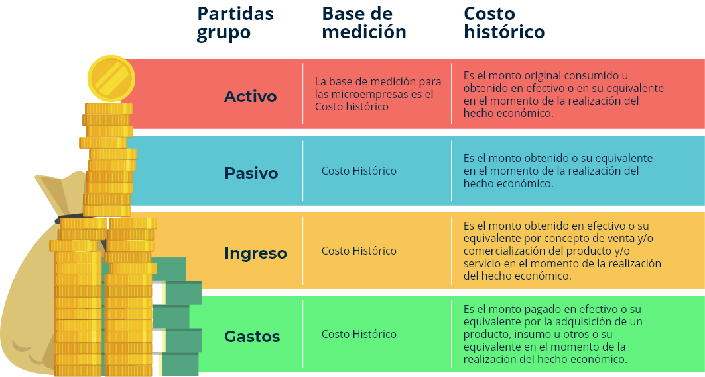
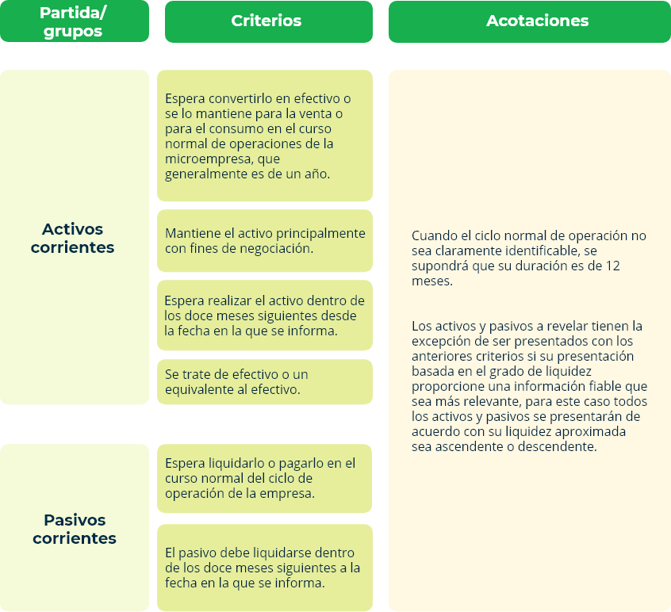
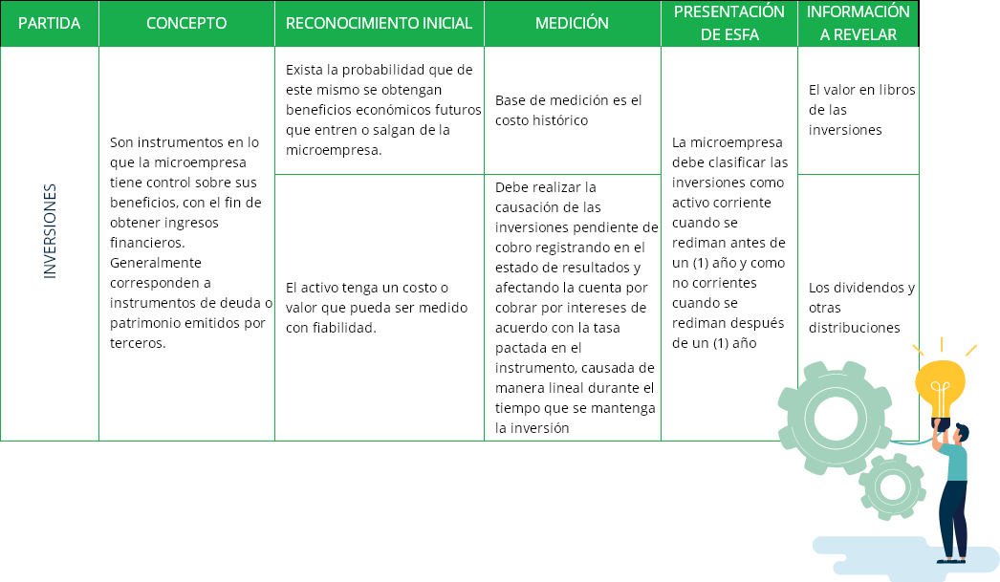
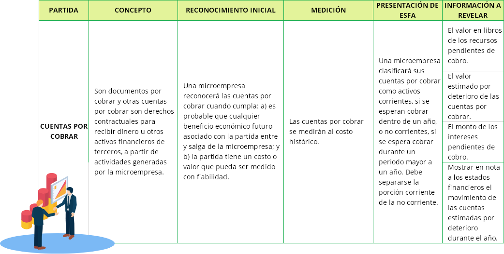
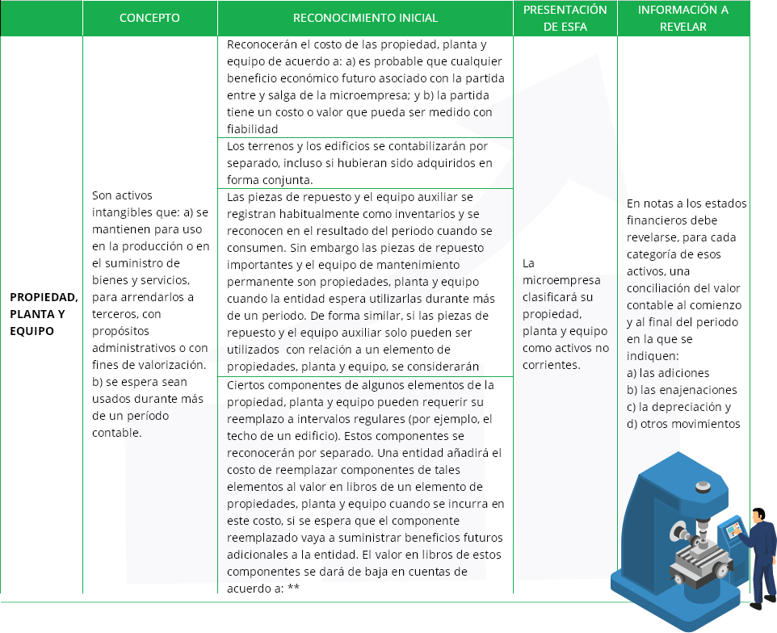
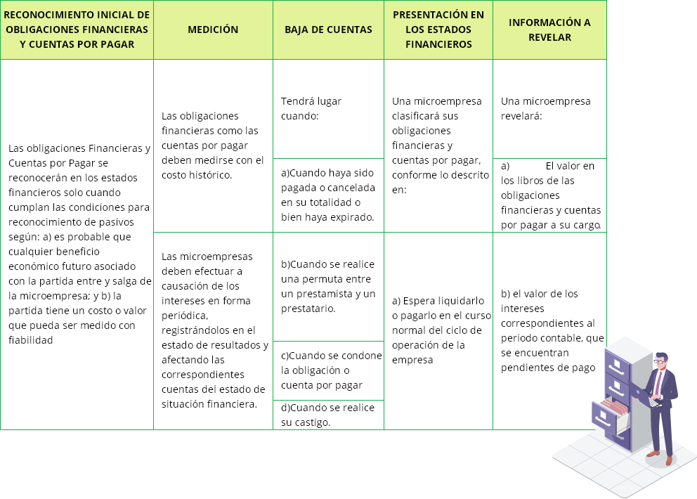
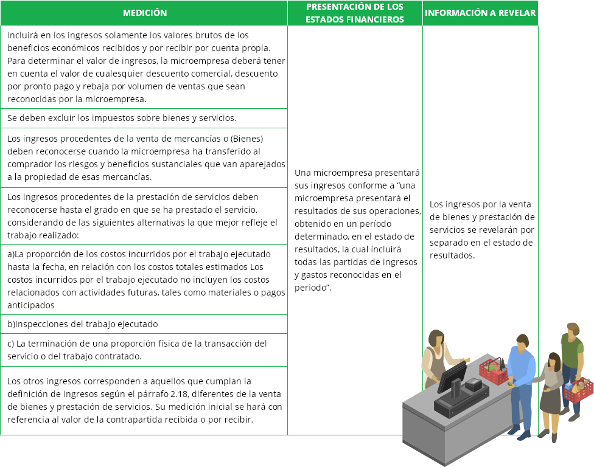

Introducción
Las microempresas han contado con una gran consideración en al conversión a NIIF, lo que se evidencia en el Decreto 2706 de 2012 que contempla cada uno de los requisitos que deben cumplir estar organizaciones para la adopción de las NIIF para microempresas.
Es así que se cuenta con la consideración de la adopción de aquellas organizaciones que inician su formalización facilitando los procesos contables y por tanto la emisión de información financiera la que se reduce para este en Estado de Situación Financiera, Estado de Resultados y Notas lo cual es simplificado comparado con las obligaciones que han adquirido las demás organizaciones correspondientes a los grupos 1 y 3 para la adopción de NIIF.
1. Identificación de las NIIF para microempresas
Según el decreto 2706 de 2012 el reconocimiento es el proceso de incorporar en los estados financieros una partida que cumple con la definición de activo, pasivo, ingreso o gasto y que cumpla los siguientes criterios:
a) Es probable que cualquier beneficio económico futuro asociado con la partida entre o salga de la microempresa.
b) La partida tiene un costo o valor que puede ser medido con fiabilidad.
La falta de reconocimiento en los estados financieros de una partida que satisface esos criterios, no se rectifica mediante la revelación de las políticas contables seguidas, ni tampoco a través de notas u otro material explicativo.
1.1 Reconocimiento de los estados financieros
Una microempresa reconocerá los activo, pasivo, ingreso y gasto en el estado de situación financiera cuando cumpla las siguientes condiciones:
2. La probabilidad de obtener beneficios económicos futuros
Este concepto se utiliza en el primer criterio de reconocimiento, con referencia al grado de incertidumbre con que los beneficios económicos futuros asociados al mismo llegarán, o saldrán, de la microempresa. La evaluación del grado de incertidumbre correspondiente al flujo de los beneficios futuros se realiza sobre la base de la evidencia relacionada con las condiciones al final del periodo sobre el que se informa que esté disponible cuando se preparan los estados financieros. Esas evaluaciones se realizan individualmente significativas, y para un grupo y gran número de elementos individualmente insignificantes.
3. Fiabilidad de la medición
El segundo criterio para el reconocimiento de una partida es que tenga un costo o un valor que pueda medirse de forma fiable. En muchos casos, el costo o valor de una partida es conocido. En otros casos debe estimarse. La utilización de estimaciones razonables es una parte esencial de la elaboración de los estados financieros y no menoscaba su fiabilidad. Cuando no puede hacerse una estimación razonable, la partida no se reconoce en los estados financieros.
Una partida que no cumple los criterios para su reconocimiento puede cumplir las condiciones para su reconocimiento en una fecha posterior como resultado de circunstancias o de sucesos posteriores. Tambien, puede ser revelada a través de notas, material informativo o cuadros complementarios. Esto es apropiado cuando el conocimiento de tal partida se considere relevante por los usuarios de los estados financieros para la evaluación de la situación financiera, el rendimiento y los cambios en la situación financiera de una microempresa.
3.1 Medición de activos, pasivos, ingresos y gastos
La medición es el proceso de determinar cuantías o valores en los que una microempresa mide los activos, pasivos, ingresos y gastos en sus estados financieros. La selección determina una base de medición. Y la base de medición para microempresas corresponde al Costo Histórico que está representado por el valor pagado más todos los costos y gastos directamente incurridos para disponer un activo en condiciones de uso o venta.
Criterios de Base de Medición
4. Definición entre partidas corrientes y no corrientes
Una microempresa revelará los activos y pasivos clasificados en corrientes y no corrientes según las siguientes condiciones:
5. Ordenación y formato de las partidas del estado de información financiera
Según el decreto 2706 de 2012 las partidas que conforman el estado de situación financiera se presentan tomando como base:
a) su liquidez, en el caso de los activos
b) su exigibilidad, en el caso de los pasivos
Se incluirán otras partidas cuando el tamaño, naturaleza o función de la partida o grupo de partidas similares sea relevante y necesario hacer su presentación, para comprender la situación financiera de la microempresa.
Las denominaciones utilizadas y la ordenación de las partidas o agrupaciones de partidas similares podrán modificarse de acuerdo con la naturaleza de la microempresa y de sus transacciones, para suministrar información que sea relevante para la comprensión de la situación financiera de la microempresa.
Ver tablas 4. Modelo de Estado de Situación Financiera para Microempresa
https://ebookcentral-proquest-com.bdigital.sena.edu.co/lib/senavirtualsp/reader.action?docID=4909299&query=Normas+internacionales+de+información+financiera+NIIFcap. 5 pag. 203 y 205
Base de datos del sistema de bibliotecas SENA
Recuerda ingresar con tu no. de identificación en usuario y contraseña
6. Información a revelar en el estado de situación financiera y notas
Una microempresa revelará como mínimo en el Estado de Situación Financiera o en las notas las siguientes partidas:
a) Efectivo y equivalentes al efectivo
b) Inversiones
c) Deudores comerciales y otras cuentas por cobrar que muestren por separado los montos por cobrar de terceros y cuentas por cobrar procedentes de ingresos causados (o devengados) pendientes de cobro.
d) Cuando no se tenga la certeza de poder cobrar una deuda comercial, deberá establecerse una cuenta que muestre el deterioro (provisión) de las cuentas por cobrar.
e) Inventario que muestren por separado las cuantías: i) que se mantienen para la venta en el curso normal de las operaciones. ii) en forma de materiales o suministros, para ser consumidos en el proceso de producción o en la prestación de servicios.
f) Propiedades, planta y equipo que muestren el valor de la depreciación acumulada
g) Acreedores comerciales y otras cuentas por pagar, que muestren por separado otros montos por pagar a proveedores, ingresos diferidos y gastos acumulados por pagar.
h) Obligaciones financieras
i) Obligaciones laborales
j) Pasivo por impuestos
k) Provisiones: corresponden al reconocimiento de las estimaciones de obligaciones presentes, surgidas de eventos pasados, sobre las cuales se desconoce con certeza su fecha de liquidación, o pago o monto.
l) Patrimonio que comprende partidas tales como capital pagado, ganancias acumuladas y utilidad o ´pérdida del ejercicio.
7. Presentación y estructura del estado de resultados
A continuación se presentan las partidas y cada uno de los requisitos de reconocimiento, medición, información a revelar y presentación en los estados financieros.
Una microempresa presentará el Estado de Resultados de sus operaciones, en un periodo determinado, en el estado de resultados, el cual incluirá todas las partidas de ingresos y gastos reconocidas en el periodo.
7.1 Estructura del estado de resultados
La utilidad bruta refleja la diferencia entre las ventas netas y los costos de ventas. De la utilidad bruta se deducen todos los gastos incurridos, se suman los otros ingresos causados y se resta la provisión para impuesto sobre la renta para establecer el resultado del período.
El impuesto sobre la renta que figura en el estado de resultados corresponde a la mejor estimación del gasto por éste concepto a la fecha de cierre.
Toda pérdida o ganancia que sea importante debe revelarse por separado en el estado de resultados, atendiendo los criterios establecidos de materialidad o importancia relativa.
Ver tabla 5. Estado de Resultados
http://www.unilibre.edu.co/bogota/pdfs/2017/NIF-MICROEMPRESAS.pdfcap. 5 pag. 203 y 205
8. Reconocimiento inicial de inversiones, cuentas por cobrar, propiedad, planta y equipo
Este apartado referencia a los principios para el reconocimiento a los principios para el reconocimiento y medición de algunas partidas del activo desde el reconocimiento inicial.
Para mayor información a continuación se presenta las inversiones, cuentas por cobrar, propiedad, planta y equipo con todos los requisitos para su presentación en el estado de situación financiera, incluido el reconocimiento inicial.
Tabla 6. Presentación y Estructura del Estado de Situación Financiera - Inversiones
Tabla 7. Presentación y Estructura del Estado de Situación Financiera – Cuentas por Cobrar
a) al final de cada periodo sobre el que se informa, una microempresa evaluará si existe evidencia objetiva de deterioro o de recuperación de valor de los activos, de que trata esta norma. Cuando exista evidencia objetiva de deterioro del valor, la microempresa reconocerá inmediatamente en cuentas de resultado una pérdida por deterioro del valor. b) la microempresa medirá la pérdida por deterioro del valor de la siguiente forma: la pérdida por deterioro es la diferencia entre el valor en libros del activo y la mejor estimación (que necesariamente tendrá que ser una aproximación) del valor (que podría ser cero) que ésta recibiría por el activo si se llegara a vender o a realizar en la fecha sobre la que se informa. c) En cuanto “Reversión” en el párrafo 2.36 dice: si en períodos posteriores se disminuye la cuantía de una pérdida por deterioro del valor y la disminución puede relacionarse objetivamente con un hecho ocurrido con posterioridad al reconocimiento inicial del deterioro, la microempresa revertirá la pérdida por deterioro reconocida con anterioridad. La recuperación del deterioro no puede llevar el valor del activo a un monto neto en libros superior al que hubiera tenido si no hubiera sufrido ese deterioro. La microempresa reconocerá inmediatamente el monto de la reversión en las cuentas de resultado.
Tabla 8. Presentación y Estructura del Estado de Situación Financiera – Propiedad, Planta y Equipo
Una microempresa dará de baja en cuentas un elemento de propiedades, planta y equipo: a) cuando disponga de el, b) cuando no espere obtener beneficios económicos por su uso o disposición,
Una microempresa reconocerá la ganancia o pérdida por la baja en cuentas de un elemento de propiedades, planta y equipo en el resultado del periodo en que el elemento sea dado de baja en cuentas.
Una microempresa determinará la ganancia o pérdida procedente de la baja de cuentas de un elemento de propiedades, planta y equipo, como la diferencia entre el producto neto de la disposición, si lo hubiera, y el valor en libros del elemento.
Es parte fundamental de la presentación en estados financieros para la Propiedad, Planta y Equipo la medición, que por su extensión y detalle no fue posible incluirla en la tabla anterior y se presente a continuación:
Tabla 9. Presentación y Estructura de ESFA “Propiedad, Planta y Equipo – Medición”
9. Ordenación y formato de las partidas del estado de información financiera
Un pasivo financiero (cuentas por pagar comerciales, documentos por pagar y préstamos por pagar), es una obligación contractual para entregar dinero u otros activos financieros a terceros (otra entidad o persona natural).
Tabla 10. Reconocimiento Inicial, Medición e Información a Revelar de las Obligaciones Financieras y Cuentas por Pagar
10. Principio de reconocimiento comercial para todos los beneficios a los empleados
Una microempresa reconocerá el costo de todos los beneficios a los empleados a los que estos tengan derecho como un gasto, a menos que otro capítulo del decreto 2706 de 2012 requiera que el costo se reconozca como parte del activo, tal como en la construcción de propiedad, planta y equipo.
a) Salarios y aportes a la seguridad social.
b) Prestaciones sociales básicas (primas, vacaciones, cesantías e intereses a las cesantías).
Cuando un empleado haya prestado sus servicios a una microempresa durante el periodo sobre el que se informa, se medirá el valor reconocido de acuerdo con el principio de reconocimiento general para todos los beneficios a los empleados, por el valor que se espera que se haya que pagar por esos servicios.
Los beneficios por periodo de empleo no proporcionan a la microempresa beneficios futuros, una microempresa los reconocerá en resultados como gastos de forma inmediata. No se reconocerán provisiones para despido sin justa causa, a menos que se trate de acuerdos de terminación aprobados legalmente con anterioridad e informados a los afectados.
Aunque este tipo de retribuciones no es usual en la microempresa, de presentarse, se medirán por la mejor estimación del probable desembolso.
La información a revelar será los beneficios a los empleados de largo plazo, revelará la naturaleza de sus beneficios y el monto de la obligación. Para los beneficios por terminación de una microempresa proporcione a sus empleados, revelará la naturaleza de los beneficios y el monto de su obligación
11. Medición y presentación de los ingresos
Los ingresos a registrar corresponden a:
a) Venta de bienes
b) Prestación de servicios
c) Otros ingresos
Tabla 11. Requisitos para la Presentación de Ingresos
12. Estados de situación financiera de apertura
Todo ente económico en etapa de formalización debe elaborar un estado de situación financiera de apertura que permita conocer de manera clara y completa su situación financiera, este debe elaborarse de acuerdo con los procedimientos para preparar los estados financieros en la fecha de transición.
Se entiende que los activos y pasivos que deben incorporarse en el estado de situación financiera de apertura, serán los que se relacionen de manera directa con la actividad de la microempresa.
13. Aplicación por primera vez de la norma de información financiera para microempresas
Una microempresa puede adoptar por primera vez la norma de información financiera para las microempresas en una única ocasión. Si una microempresa que utiliza la norma de información financiera para las microempresas deja de usarla durante uno o varios periodos sobre los que se informa y se le requiere o elige adoptarla nuevamente con posterioridad, las exenciones especiales, simplificaciones y otros requerimientos de esta sección no serán aplicables a la nueva adopción.
Adopción por Primera Vez
Una microempresa que adopte por primera vez la Norma de Información Financiera para Microempresas aplicará lo contenido en el decreto 2706 de 2012 en la preparación de sus primeros estados financieros, los cuales deben cumplir con los requisitos establecidos en la mencionada norma.
Los primeros estados financieros de una microempresa conforme a esta norma son los estados financieros anuales en los cuales la microempresa hace una declaración inicial, explícita y sin reservas del cumplimiento de la mencionada norma. Los estados financieros preparados de acuerdo con esta norma son los primeros estados financieros de una microempresa si ella por ejemplo:

No presentó estados financieros en los periodos anteriores.
Presentó sus estados financieros más recientes según el marco contable anterior, que no son coherentes con todos los aspectos de esta norma.
Presentó sus estados financieros más recientes de conformidad con NIIF o NIIF para Pymes.
Los estados financieros o conjunto completo de estados financieros para la microempresa son:
Estado de Situación Financiera
Estado de Resultados
Notas a los estados financieros como lo especifica el párrafo 3.8 de esta norma.
Una microempresa revelará información comparativa respecto del periodo comparable anterior para todos los montos presentados en los estados financieros del periodo corriente, así como información financiera específica. Adicionalmente, incluirá información comparativa para la información de tipo descriptivo y narrativo, cuando esto sea relevante para la comprensión de los estados financieros del periodo corriente.
Una microempresa puede presentar información comparativa con respecto a más de un periodo anterior comparable. La fecha de transición a la norma de información financiera para microempresas de una microempresa es la fecha en la que prepara su estado de situación financiera de apertura a esta norma
Procedimientos para Preparar los Estados Financieros en la fecha de transición
Una microempresa deberá, en su estado de situación financiera de apertura en la fecha de transición a la norma de información financiera para las microempresas:
Reconocer todos los activos y pasivos de acuerdo con lo señalado en esta norma.
No reconocer partidas como activos y pasivos si esta norma no lo permite.
Reclasificar las partidas que reconoció, según su marco contable anterior, como activo, pasivo o componente de patrimonio, pero que son de un tipo diferente de acuerdo con esta norma.
Aplicar esta norma al medir todos los activos y pasivos reconocidos.
Las políticas contables que una microempresa utilice en su estado de situación financiera de apertura conforme a esta norma pueden diferir de las que aplicaba en la misma fecha utilizando su sistema contable anterior. Los ajustes resultantes surgen de transacciones, otros sucesos y condiciones anteriores a la fecha de transición a esta norma. Por lo tanto, una microempresa reconocerá estos ajustes, en la fecha de transición a esta norma, directamente en la cuenta de resultados acumulados.Revaluación como Costo Atribuido
Una microempresa que aplica por primera vez esta norma, podrá utilizar como costo de las propiedades, planta y equipo en el estado de situación financiera d apertura, cualquiera de los siguientes criterios:
a) Un avalúo técnico efectuado en la fecha de transición
b) El saldo que se trae de los registros contables anteriores, siempre y cuando cumplan con los criterios de reconocimiento de esta norma
En lo sucesivo este valor será la base para aplicar las disposiciones contenidas en la presente norma.
Revelación de la Transición a la Norma de Información Financiera para las Microempresas
Una microempresa explicará en una nota a los estados financieros, como ha efectuado la transición desde el marco contable anterior a esta norma.
Para cumplir con lo establecido en el párrafo anterior, los primeros estados financieros preparados conforme a esta norma son:
a) Una descripción de la naturaleza de cada cambio en la política contable
b) Conciliación de su patrimonio determinado de acuerdo con su marco contable anterior y con el patrimonio determinado de acuerdo de esta norma según las siguientes fechas:
i) La fecha de transición de esta norma
ii) El final del último periodo presentado en los estados financieros anuales más recientes de la microempresa determinado de acuerdo con su marco contable anterior.
Una conciliación del resultados de sus operaciones, determinado de acuerdo con su marco contable anterior, para el último periodo incluido en los estados financieros anuales más recientes de la microempresa, con el resultado determinado de acuerdo con esta norma para ese mismo periodo.
Si una microempresa no presentó estados financieros en periodos anteriores, revelará este hecho en sus primeros estados financieros preparados conforme a esta norma.
Actividad didáctica

¡Pon a prueba tu conocimiento!
La siguiente actividad tiene como propósito validar los conocimientos adquiridos sobre Interpretación de los resultados de la información financiera NIIF para microempresas
IniciarGlosario
Diferencia de cambio:es la que surge al convertir un determinado número de unidades de una moneda a otra moneda, utilizando tasas de cambio diferentes.
Moneda extranjera (o divisa):es cualquier otra distinta de la moneda funcional de (NOMBRE DE LA EMPRESA O ENTIDAD).
Moneda funcional:es la moneda del entorno económico principal en el que opera (NOMBRE DE LA EMPRESA O ENTIDAD).
Moneda de presentación:es la moneda en que se presentan los estados financieros.
Partidas monetarias:son unidades monetarias mantenidas en efectivo, así como activos y pasivos que se van a recibir o pagar, mediante una cantidad fija o determinable de unidades monetarias.
Tasa de cambio de contado:es la tasa de cambio utilizado en las transacciones con entrega inmediata.
Tasa de cambio de cierre:es la tasa de cambio de contado existente al final del periodo sobre el que se informa.
Valor razonable:es el importe por el cual puede ser intercambiado un activo, o cancelado un pasivo, entre un comprador y un vendedor, interesados y debidamente informados, que realizan una transacción libre.
Material complementario
| Autor, (año del documento o material), Nombre del documento o material. | Tipo de material ( Video, capítulo de libro, articulo, otro) | Enlace del Recurso o Archivo del documento o material |
|---|---|---|
| Guía de Implementación Relevante emitida por IASB de las NIIF | Documento | Descargar |
| Decreto 2706 de 2012 | Documento | Descargar |
| Directrices para la Contabilidad e Información Financiera de las Pequeñas y Mediana Empresas, orientación nivel 3 | Documento | Descargar |
| NIIF para Microempresas – NIIF para Microempresas con ejercicios de aplicación | Documento | Descargar |
Referencias bibliográficas
Godoy, R. (2018). Adopción por primera vez a las niif-esfa : Plenas, pymes y microempresas. Retrieved fromhttps://ebookcentral-proquest-com.bdigital.sena.edu.co
MINCIT, (2012). Decreto 2706 de 2012. Página Web Normas de Información Financiera, www.niif.com.co: https://niif.com.co/decreto-2706-2012/marco-tecnico-nif-grupo-3
Ramírez, (2017). NIIF para Microempresas. Normas de Información Financiera para Microempresas con ejercicios de aplicación. Universidad Libre. Bogotá y Cali. Grupo de Investigación, Gestión y Apoyo a Mipymes. Página web Universidad Libre de Colombia http://www.unilibre.edu.co/bogota/pdfs/2017/NIF-MICROEMPRESAS.pdf